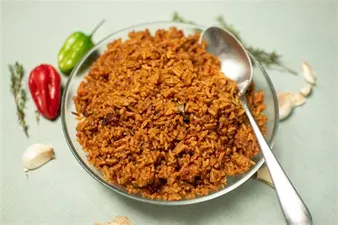

Description
It is a one-pot rice dish and is of great historical significance.The dish goes back to as long ago as 1500s
Ingredients
- 2 cups rice
- 5-6 tomatoes, pureed
- 1 large onion, sliced
- green bell pepper, chopped
- 1 yellow chilli pepper/ bonnet peppers (optional - only if you can find it)
- cups chicken stock/vegetable stock/water
- tsp curry powder
- 1 tsp thyme/basil leaves/oregano/any other herb
- Salt to taste
- Half tbsp chopped garlic
- 1 tsp chopped ginger
- 2 bay leaves (tej patta)
Steps
- Rinse rice and boil it in water with some salt till almost cooked. Alternatively, you can cook rise with tomato puree also
- Heat oil/ghee in a pan. Roast bay leaf, ginger, garlic, chilli pepper and onions.
- Let the mixture cool down and grind it.
- In the same pan, add back onion and spice mixture, add capsicum, tomato puree , some salt, curry water and stock/water, and let the paste boil for 10-15 minutes till gravy thickens and tomatoes are cooked.
- Add boiled rice, mix well and cook for another 5 minutes.
- Turn off the gas, garnish with herbs and serve.
Return To Top
Return To Homepage